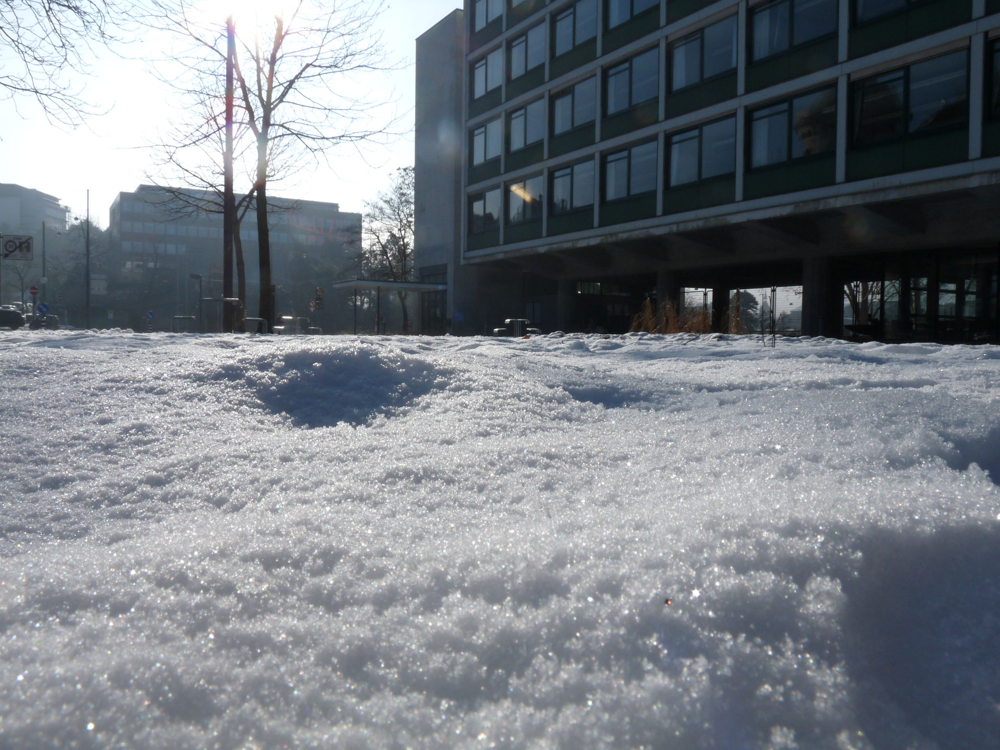

Der kleine Baum. Bei diesem Bild erkennt man gut, was das Hauptobjekt ist, natürlich der Ast. Aus dieser Perspektive sieht er aus wie ein Baum. Auch die Sonne scheint gut darauf. Da das Objekt in der Mitte des Bildes ist, ergibt sich auch ein gutes Gleichgewicht.

Die Schneelandschaft. Hier fehlt ein Objekt. Man könnte meinen es ist das Gebäude oder der Baum, aber so richtig gibt es kein Objekt. Die Sonne und die Schatten fallen schön.
Der Majestätische Turm. Hier ist gut ersichtlich was das Hauptobjekt ist und dies steh auch im Mittelpunkt. Leider sind wie hinteren Schachfiguren zu präsent, was dazu führt, dass der Turm ein wenig unter geht.